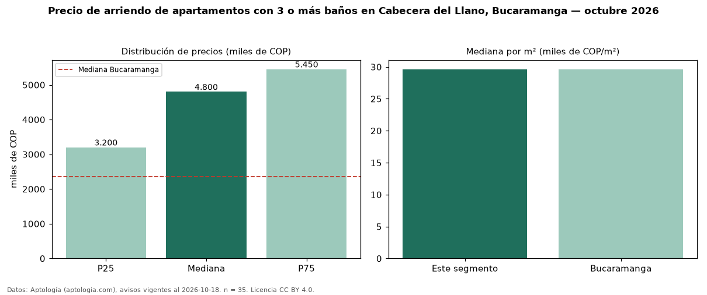

Precio de arriendo de apartamentos con 3 o más baños en Cabecera del Llano, Bucaramanga — octubre 2026
Con 35 avisos vigentes, el canon mediano de apartamentos con 3 o más baños en arriendo en Cabecera del Llano, Bucaramanga es COP 4,80 millones al mes. Eso es 34 % más que la mediana de todos los apartamentos en arriendo de Cabecera del Llano (COP 3,58 millones, n = 66); este segmento reúne el 53 % de esos avisos. Por metro cuadrado, la mediana es COP 29.630/m² al mes (n = 35), 9 % por debajo del conjunto de referencia (COP 32.507/m²). El área mediana anunciada es 149 m². El segmento con más oferta es el de 3 o más habitaciones (31 avisos, mediana COP 4,80 millones). La administración mediana declarada es COP 964.000 al mes (n = 28), aparte del canon. El estrato más frecuente es 6 (83 % de los avisos con estrato). La mitad central de los avisos va de COP 3,20 millones a COP 5,45 millones (razón 1,7), una dispersión moderada. Datos: Aptología (aptologia.com), CC BY 4.0 — https://www.aptologia.com/arriendo/bucaramanga/cabecera-del-llano. Archivos: PDF, CSV con las cifras y gráfica PNG.

| Avisos únicos | 35 |
|---|---|
| Percentil 25 | COP 3.200.000 |
| Mediana | COP 4.800.000 |
| Percentil 75 | COP 5.450.000 |
| Mediana por m² | COP 29.629 |
Fuente: avisos vigentes de portales inmobiliarios recopilados por Aptología, deduplicados (mínimo 30 avisos únicos por celda). Precios pedidos, no cerrados. Fecha: 2026-10-18.